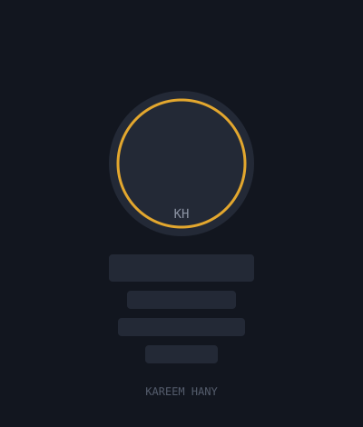

Nimbus
A cloud cost analytics platform that surfaces spend anomalies across AWS accounts in real time, cutting infrastructure waste by up to 30%.
ReactGoAWS
View case study →
SYSTEM BOOT
Loading portfolio…
FIG. 01 — INTRODUCTION
Senior Full‑Stack Developer
I design and ship resilient web platforms end-to-end — from data models to pixels — with a focus on performance, clarity, and systems that hold up under real-world load.
SEC. 02 — ABOUT
I'm a full-stack developer with 4+ years building products used by hundreds of thousands of people — from early-stage MVPs to systems processing millions of requests a day. My background spans backend architecture, distributed systems, and frontend engineering, which lets me own a feature from database schema to the last pixel.
My philosophy is simple: software should be boring in the best way — predictable, observable, and easy to change six months from now. I favor clear abstractions over clever ones, and I measure success by how quickly a team can move safely, not just how fast a feature ships once.
I use technology as a lever for impact — automating the tedious, surfacing the invisible, and building tools that let teams and users do more with less friction.

IMG_01 / KHSEC. 03 — SKILLS
SEC. 04 — PROJECTS
A cloud cost analytics platform that surfaces spend anomalies across AWS accounts in real time, cutting infrastructure waste by up to 30%.
A real-time payments reconciliation engine handling high-volume transaction matching with sub-second consistency guarantees.
A lightweight customer-engagement platform built for SMBs, with automated pipelines that replaced three disconnected tools.
An internal developer platform and CLI toolkit that cut new-service scaffolding time from two days to under fifteen minutes.
A public-facing GraphQL API powering a multi-vendor marketplace, designed for predictable scaling during seasonal traffic spikes.
A zero-trust authentication and identity platform delivering SSO, MFA, and audit-ready access logs for B2B SaaS products — cutting customer security-review time by 60%.
SEC. 05 — EXPERIENCE
Nova Systems
Brightline Labs
Cedar & Co
SEC. 06 — SERVICES
End-to-end delivery of web applications — from data modeling and APIs to polished, responsive interfaces.
Designing scalable, cost-aware infrastructure on AWS with containerization and infrastructure as code.
Architecture reviews, performance audits, and roadmap guidance for teams scaling their engineering practice.
Building well-documented, versioned APIs and integrating third-party services without the fragility.
SEC. 07 — OBJECTIVE
“I'm looking to join a team building products at meaningful scale, where I can turn deep technical ownership into outcomes users actually feel — while growing the next generation of engineers around me.”
SEC. 08 — CONTACT
Have a role, a project, or just a question? Send a message and I'll get back to you within a couple of days.